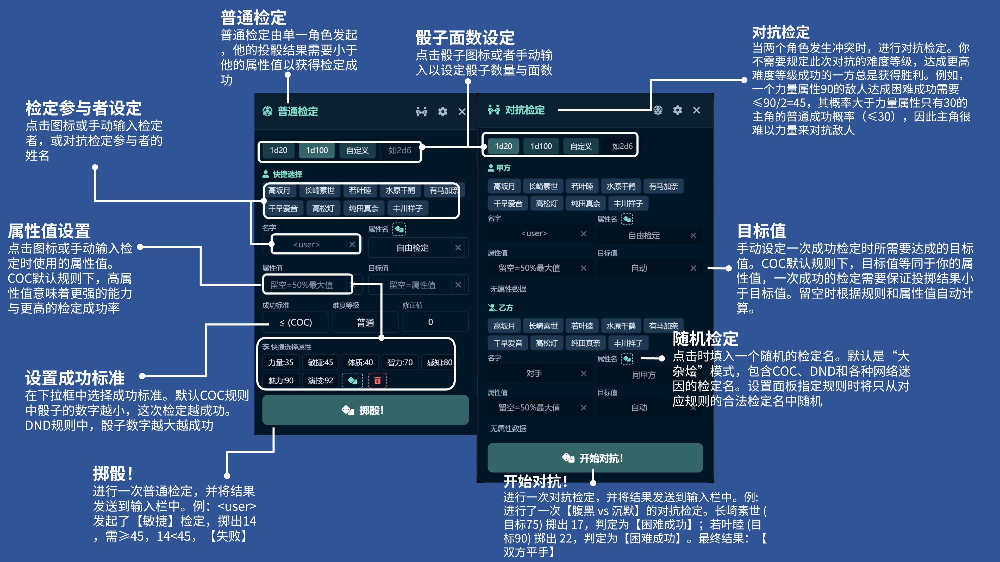
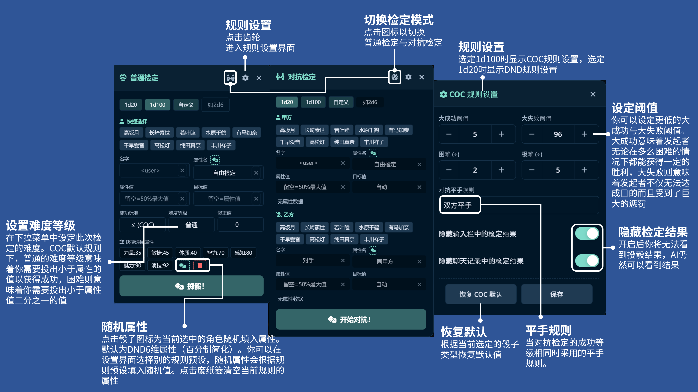
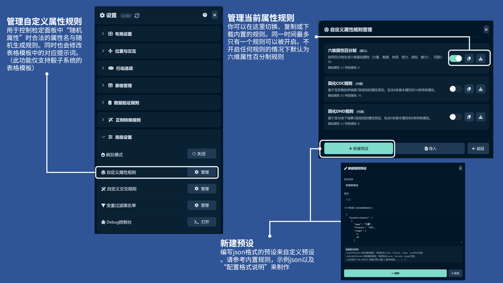
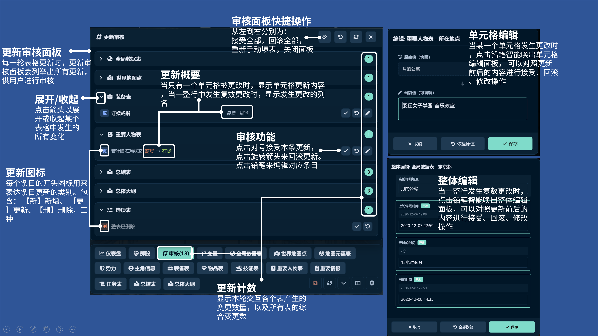
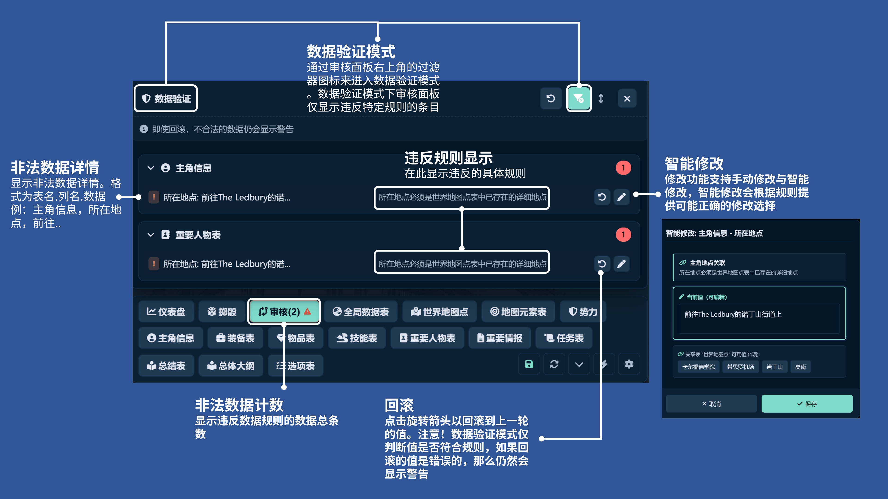
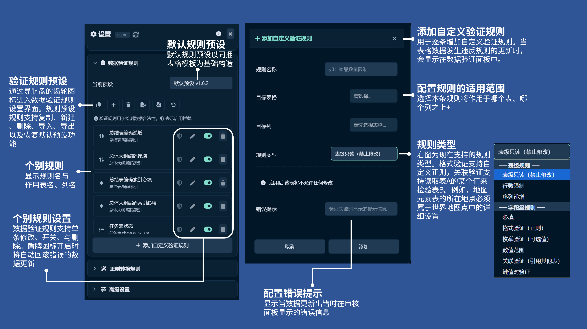
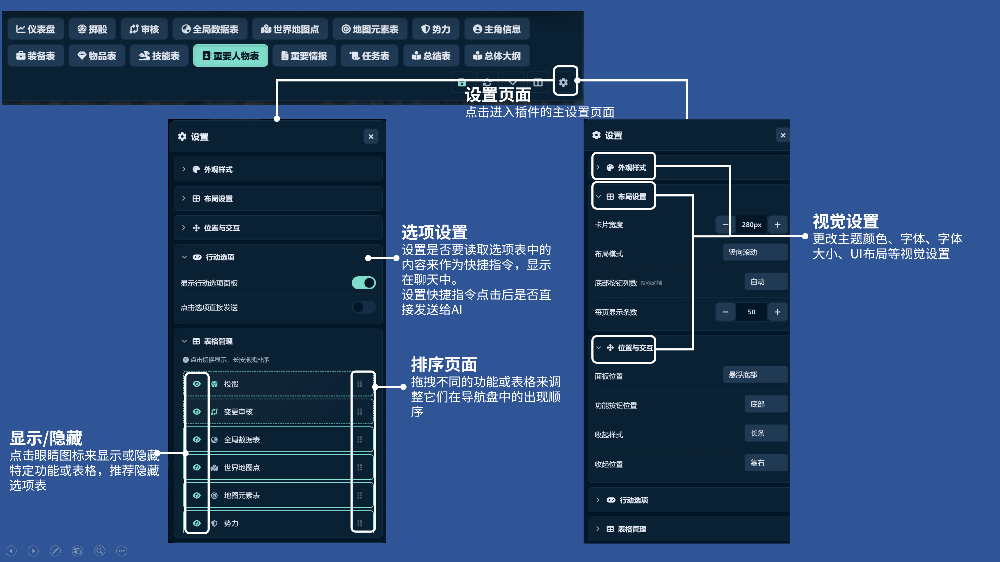

骰子系统插件
v3.80最初只是一个简单的投骰工具，如今已进化为功能完备的 AIRP 辅助系统。
变量面板
全新的变量管理界面，支持 MVU/ERA 格式变量的查看、编辑和快捷检定。提供数值过滤模式和层级简化功能，可自定义过滤黑名单。
自定义交互规则
自定义卡片底部的快捷按钮，通过 JSON 配置关键词匹配和提示词模板，支持规则的导入导出。
正则转换规则
使用正则表达式自动修改表格数据，适用于批量清理 AI 生成的冗余内容、统一格式等场景。支持预设管理和酒馆正则导入。
地图功能
可视化地图模块，展示次要地点、详细地点网格和互动元素。支持快速定位当前位置，点击地点或角色呼出详情卡片。
收藏夹面板
跨聊天、跨角色卡收藏任意卡片。支持标签分类、过滤筛选，可将收藏的卡片智能发送到当前表格中。
属性规则自动同步模板
切换自定义属性规则时，自动修改表格模板以匹配新规则（仅支持同捆表格模板）。无需手动调整，切换规则更加便捷。


安装前准备

在开始使用骰子系统前，请按以下步骤完成环境配置。整个过程约需 5-10 分钟。
下载最新版本
从 Google Drive 下载最新版骰子系统压缩包。
导入表格模板
将表格模板导入数据库插件。
路径： 酒馆左下角 魔术棒 数据库 左侧数据管理标签页，表格模块预设区域点击导入
① 删除当前标识数据（如有旧数据）
② 导入新模板
③ 选择"模板覆盖最新层数据"
建议在新角色卡的新聊天中使用。如果一定要在旧卡中使用，请参考 数据库主贴 中关于如何手动重新填表的教程和讨论。
导入骰子系统脚本
在酒馆助手中导入 骰子系统脚本.json 文件。
刷新页面并开始使用
刷新酒馆页面 (F5 或 Ctrl+R) 以确保插件正确加载，然后即可开始使用！
常见问题：
- 导入脚本后没有任何反应 → 请确保已刷新页面
- 仪表盘或人际关系图显示异常 → 请检查表格模板是否正确导入
- 如果仍然无法使用，请尝试：
- 清除浏览器本地数据（缓存、LocalStorage）
- 关闭除骰子系统与数据库以外的其他脚本
- 关闭酒馆美化等可能产生冲突的插件
- 使用无痕/隐私模式测试
仪表盘与导航
全局状态总览
仪表盘是表格的可视化的核心控制台。这里汇集了主角的属性、人物列表、技能表、装备栏、物品栏、任务进度以及当前区域的可互动地点。
- 主角核心面板： 显示主角状态、资源、六维基础属性。
- 区域地图信息： 自动显示当前场景可互动的地点，点击即可让主角前往。
- 高度调节： 上下拖拽面板顶部边缘，可自由调整面板显示高度。

快捷交互指令
无需手动输入繁琐的指令，仪表盘集成了大量一键操作功能。同时支持PC与移动端。

投骰入口
点击骰子图标发起普通检定，系统会自动读取选中角色的属性数值。
对抗检定
点击对抗图标，快速发起与该角色的对抗或交互检定。
地图入口
点击打开地图模块，显示地点与可互动元素。
关系图入口
一键打开人物关系可视化界面及头像管理。
投骰与规则系统
为什么需要投骰？
在 AIRP 中，如果不引入真正的随机性，故事情节往往会陷入千篇一律的套路。这个问题无法通过预设或世界书的方案来完全解决——
-
世界书中让 AI 自己投骰： AI只会幻觉出一个结果，用来服务于它所熟悉的，讨好用户的套路剧情展开
-
要求"高难度模式"： 矫枉过正——用户想做的事情几乎没有能成功的
-
用酒馆宏发送真随机结果： 能有所改善，但会消耗 AI 宝贵的注意力；且所有检定判断与描述仍由 AI 主导，故事走向依然趋于陈腐
一个好的 AIRP 体验需要人脑的参与。外部投骰让你掌握叙事节奏，由你来决定何时检定、检定什么，AI 只负责根据结果进行演绎。
无需额外配置：你不需要在世界书中对"投骰"做任何解释或规范。AI 的世界知识足以理解这一机制。过多的关于“检定”“骰子”的额外说明，反而可能导致元叙事层面的要素不当地闯入角色扮演的故事文本中。
我应该在什么时候投骰？
当主角或故事中的角色试图完成一个有挑战性的/不确定成败的行为时，你可以在描述完这次尝试以后使用骰子系统实施一次检定。
用随机的骰子来裁决不确定事件的结果正是投骰存在的意义。你不需要为每一句话、每一个动作都投骰。只需要为那些结果不定的行为投骰
一个常见的例子：“我试图说服
如果你没什么特别想法，甚至可以随机选一个角色、随机选一个属性来投骰——看看 AI 会编出什么样的故事发展。
为什么不做成自动投骰？
自动投骰看起来很美好，但实际上会带来两个严重问题：
- 1 资源消耗：自动判断何时投骰需要占用 AI 的注意力，或需要额外的 API 调用。无论哪种方式，都会降低正文质量或增加响应时间。
- 2 违背初衷：投骰系统的核心价值在于引入非 AI 的随机性。而一个由 AI 驱动的判断与检定引擎，几乎必然会让故事重新走向陈腐化。
手动投骰让你掌握叙事节奏，同时保证随机性的纯粹。
疯狂模式：如果你真的想体验自动投骰，可以在设置 → 高级设置中开启"疯狂模式"，启用完全随机的自动投骰。具体效果请亲自尝试！
插件内置了功能完备的投骰系统，支持普通检定与对抗检定两种模式，并提供 COC / DND 双规则配置。
骰子面数设定
支持 1d20、1d100、自定义等多种骰型
快捷选择参与者
一键选择检定角色，自动读取属性值
难度等级与修正值
设置普通/困难/极难，支持数值修正
COC / DND 规则
自定义大成功/大失败阈值与平手规则
隐藏检定结果
开启后你看不到投骰结果，但 AI 仍可看到
随机检定
随机选择一个检定名，支持 COC/DND 混合模式
随机属性
一键为当前角色随机生成属性值
属性规则预设
管理随机属性的生成规则，支持导入导出



审核面板与数据验证
审核面板是数据管理的核心控制台，集成了数据更新审核与数据验证两大功能。通过右上角的过滤器图标可在两种模式间切换。
更新审核模式
显示 AI 对表格的所有变更，供你逐条确认、修改或回滚。
数据验证模式
仅显示违反自定义规则的数据，并提供智能修改建议。
更新审核
当 AI 修改表格数据时，不再是"黑箱操作"。审核面板会列出所有变更，供你逐条确认。

批量操作
一键"接受全部"或"回滚全部"，快速处理大量更新。
智能编辑
点击铅笔图标，可对比新旧值进行手动修正，支持单格和整行编辑。
高亮显示
发生变更的单元格会在表格中高亮显示，一目了然。
数据验证 v3.00 新增
数据验证功能允许你为表格数据设置自定义规则，当 AI 更新的数据违反规则时，系统会自动标记并提示修正。
多种规则类型
表级只读、行数限制、必填、格式验证、枚举验证等
关联验证
跨表引用验证，确保数据一致性
智能修改建议
根据规则自动提供可能正确的修改选项
自动回滚保护
开启盾牌图标后违规数据自动回滚

模式切换
通过审核面板右上角的过滤器图标切换到数据验证模式，仅显示违反规则的条目。
违规数据详情
清晰显示违反的具体规则描述，帮助快速定位问题。
智能修改
点击铅笔图标，系统会根据规则提供可能正确的值供你选择。
违规计数
导航栏的审核按钮会显示当前违反规则的数据总条数。

规则预设管理
支持复制、新建、删除、导入、导出规则预设，以及恢复默认预设。
规则类型
表级只读、行数限制、必填、格式验证（正则）、枚举验证、数值范围、关联验证等。
自动回滚
开启盾牌图标后，违反规则的数据更新会被自动回滚。
支持的验证规则类型
| 规则类型 | 级别 | 说明 |
|---|---|---|
表级只读 |
表级 | 禁止 AI 对该表进行任何修改 |
行数限制 |
表级 | 限制表格的最小/最大行数范围 |
序列递增 |
字段级 | 编码索引必须严格递增，不可跳号或重复（如：AM0001、0002、0003...） |
必填验证 |
字段级 | 指定字段不能为空 |
格式验证 |
字段级 | 使用正则表达式验证字段格式 |
枚举验证 |
字段级 | 字段值必须在预设的可选值列表中 |
数值范围 |
字段级 | 数值必须在指定的最小/最大范围内 |
关联验证 |
字段级 | 字段值必须存在于另一个表的指定列中（如：NPC 所在地点必须是地图表中已有的地点） |
键值对验证 |
字段级 | 验证「键:值」格式的数据，支持数值范围限制（如：属性名:数值） |
可视化卡片与锁定

快速检定
所有带有数字的属性字段旁都会渲染一个骰子图标。点击即可快速以该属性发起一次普通检定，无需输入任何指令。
数据锁定 已弃用
点击任意条目呼出上下文菜单，可锁定整行或单个单元格。
⚠️ 此功能已不再推荐使用。最新版数据库插件已内置类似的锁定功能，建议直接使用数据库本体的锁定功能。
交互选项
卡片底部提供"交谈"、"观察"、"战斗"等快捷按钮，点击即自动发送相应指令。
头像管理与关系图

头像自定义
支持上传本地图片或使用 URL 设置角色头像。支持裁剪调整，让你的角色列表和关系图更加美观。
别名系统
为角色设置别名（如“祥子, sakiko”），系统会自动合并同一角色的不同称呼，共享头像与关系节点。
配置分享
支持导入/导出头像配置文件。通过“智能合并”功能，可以轻松整合社区分享的头像包。你可以尝试导入同捆的头像管理示例.json来体验这一功能
数据表识别规则
插件通过模糊匹配识别表格。只要表名或列名包含以下关键词即可生效：
提示：关键词匹配支持包含关系，例如表名为"主角技能表"会同时匹配"主角"和"技能"两类规则。列名匹配同理。
表格设置与个性化
点击导航栏右侧的 齿轮图标，即可进入插件的主设置页面。在这里你可以自定义外观、调整布局、管理表格显示等。
外观样式
更改主题颜色、字体、字体大小等视觉设置
布局设置
调整卡片宽度、布局模式、每页显示条数等
位置与交互
设置面板位置、功能按钮位置、收起样式等
表格管理
显示/隐藏表格，拖拽调整导航栏顺序

常用设置说明
显示 / 隐藏表格
在「表格管理」中，点击每个表格前的 眼睛图标来显示或隐藏特定表格。推荐隐藏"选项表"以获得更清爽的界面。
排序页面
在「表格管理」中，长按拖拽表格或功能项右侧的把手，可以调整它们在导航栏中的出现顺序。
行动选项
设置是否读取选项表中的内容作为快捷指令显示在聊天中，以及点击选项后是否直接发送给 AI。
布局模式
在「布局设置」中选择「竖向滚动」或其他模式，调整卡片宽度和每页显示条数，打造最适合你的浏览体验。
localStorage.clear() 命令。
手动修改属性与模板
修改角色属性
当你需要手动调整主角或 NPC 的属性值时，按以下步骤操作：
在导航栏中点击「主角信息」或「重要人物」表。
找到你想修改的角色，点击其属性区域（如「基础属性」或「特殊属性」）。
使用标准格式：力量:60;敏捷:70;智力:55，多个属性用分号分隔。
保存后，再次点击该属性条目，选择「锁定」。锁定后 AI 无法修改该值，保障你的手动设置不被覆盖。
COC 技能示例：侦查:60;聆听:50;图书馆使用:50;斗殴:50;闪避:35
修改表格模板
如果你需要调整表格结构（增删列、修改提示词等），可以通过数据库插件的编辑器进行：
路径： 酒馆左下角 魔术棒 数据库 左侧数据管理页 打开可视化表格编辑器
- 在编辑器中可以修改表名、列名、提示词（note 字段）等
- 修改后点击保存，仅影响当前聊天，不影响其他聊天
- 修改表名或列名可能导致可视化插件无法识别，请参考「数据表识别规则」章节
自定义交互规则

什么是交互规则？
交互规则允许你自定义卡片底部的快捷按钮。当表名匹配指定关键词时，系统会自动在对应卡片上显示预设的交互按钮（如"前往"、"探索"等）。
JSON 配置
通过 JSON 配置定义规则：
table_keywords- 匹配的表名关键词（如"地点"、"世界"）actions- 定义按钮标签（如"前往"、"探索"）template- 提示词模板，支持{Name}（表格第一列列名）等变量替换
管理功能
支持规则的新建、导入、导出、克隆和删除。可单独开关特定规则。
路径： 设置 高级设置 自定义交互规则
变量面板

变量模板
在底部标签栏点击"变量"即可打开变量面板，支持 MVU 与 ERA 两种变量格式。点击任一变量可进入编辑弹窗，手动修改数值并保存。
快捷检定
对于包含数值的变量，点击变量右侧的骰子图标可直接进行快捷检定。
数值过滤模式
点击漏斗图标进入数值模式，系统会过滤掉数值为0以及处于黑名单中的变量，仅显示有意义的数值项。
层级简化
通过"显示层级"开关简化复杂的变量路径。例如关闭某层级后，"角色列表 > 索拉里奥 > 熟练加值"可简化为"索拉里奥 > 熟练加值"。
变量过滤黑名单
通过设置黑名单关键词，过滤掉不需要进行快捷检定的变量。即使变量值中包含数值，只要变量名命中黑名单，系统就不会显示骰子图标。
默认过滤词
系统预设了常用的过滤词，如：时间、日期、备注、头像、进度、编码、ID、年龄、三围等。可通过管理界面自定义添加或重置。
路径： 设置 高级设置 变量过滤黑名单 管理
示例："头像"变量的值可能是 image_2026-01-05.png，因文件名包含数字，系统默认会尝试添加骰子图标。将"头像"加入黑名单后可避免此问题。

正则转换规则

什么是正则转换规则？
设置正则转换规则后，系统会自动修改数据库表格中所有匹配的数据。适用于批量清理AI生成的八股内容、统一格式等场景。
编辑规则
正则转换规则使用标准的 JavaScript 正则表达式语法。可配置：
- 规则名称/描述 - 便于识别规则用途
- 匹配模式 - 正则表达式模式
- 替换内容 - 留空表示删除，可使用
$1、$2引用捕获组 - 作用范围 - 全局或指定表格
- 优先级 - 数值越大优先级越高，处理顺序越靠前
预设管理
支持克隆、新建、删除、导入、导出预设。点击旋转箭头可恢复默认预设。默认预设会在脚本内置预设更新时自动同步。
导入酒馆正则
可直接导入酒馆格式的正则规则，无需手动转换。
路径： 设置 正则转换规则
注意：除非特别规定，默认开启g模式替换所有匹配项。过于复杂的正则可能因处理超时而导致失败，请尽量使用简单的、最低限度的正则。
地图模块

地图入口
通过仪表盘，或世界地图点、地图元素表等处的地图图标进入地图模块。
切换次要地点标签
点击不同的标签来切换次要地点。此数据依赖于「世界地图点」与「地图元素」表的数据结构。
回到当前位置
点击时返回主角的当前位置，快速定位。
当前详细地点
点击当前详细地点的图标来唤出对应的表格可视化卡片，查看地点详情。
详细地点网格
显示当前选中的次要地点中的所有详细地点。例如「监牢洋馆」被选中时，其中包含10个详细地点。
互动元素
显示当前选中的主要地点中的互动元素以及数量。互动元素包括位于此处的角色以及地图元素。点击人物头像或互动元素名，呼出对应的表格可视化卡片。
提示：地图模块的数据来源于「世界地图点」和「地图元素」两张表格。确保表格模板正确导入后，地图才能正常显示。
收藏夹面板

收藏卡片
你可以在表格面板中收藏任一卡片，实现跨聊天、跨角色卡的卡片收藏。右键点击卡片选择「收藏此行」即可添加到收藏夹。
卡片标签
为收藏的卡片设置标签，便于搜索和过滤。多个标签用逗号分隔，留空则无标签。
卡片标签过滤
在收藏夹面板中，可以开启或关闭特定标签的卡片显示，快速筛选需要的内容。
发送卡片到当前表格
将收藏的卡片发送到当前聊天的当前表格中。插件会智能推荐表格结构相似的目标表格，显示匹配程度（完全匹配/部分匹配）和未匹配的列。
入口： 底部导航栏 收藏夹
常见问题 (FAQ)
安装与更新
Q1 安装后没反应 / 面板打不开怎么办？
请依次检查以下几点：
- 1. 刷新页面：导入脚本后务必刷新页面 (F5)，否则插件无法初始化。
- 2. 排查插件冲突：本插件与星火佬的「可视化表格」脚本不兼容，请二选一。与「浮岛」可以共存。
- 3. 如仍有问题，尝试在酒馆助手中禁用其他脚本后重试。
Q2 怎么更新脚本？怎么知道是否成功更新？
脚本支持自动更新。只要你使用的是主贴首楼的脚本，就不会有无法更新的问题。
- 打开设置界面，查看左上角的版本号是否为最新版本
- 点击版本号右侧的旋转箭头可手动触发更新
- 如果无法自动更新，请检查是否使用最新版酒馆与酒馆助手，以及是否存在网络问题
Q3 更新脚本或模板会影响旧聊天吗？
- 更新脚本：直接在酒馆助手中导入新版本，删除旧版本即可，刷新页面后生效。不影响任何聊天数据。
- 更新模板：按「安装前准备」中的步骤操作（删除当前标识数据 → 导入新模板）。此操作仅影响当前聊天，旧聊天的数据和模板不受影响。
建议在新聊天中使用新模板，旧聊天可保持原状。
Q4 面板每次刷新都会多出莫名其妙的条目？
这是老版本表格锁定功能的遗留 Bug，已在最新版本中修复。
按 F12 打开浏览器控制台，输入以下命令并回车：
localStorage.clear()
执行后更新到最新版脚本，刷新页面即可。此命令会清除本站点的本地设置（如主题偏好），但不影响聊天记录。
兼容性
Q4 必须使用同捆的表格模板吗？
基础功能（表格可视化、投骰检定、数据审核、单元格编辑）对绝大多数模板都是通用的。
但以下功能需要同捆模板或自行适配列名规则：
- • 仪表盘完整展示（主角属性、地点列表等）
- • 人物关系图谱
参考「数据表识别规则」章节了解列名匹配规则。
Q5 MVU 卡的变量和数据库数值冲突了怎么办？
这是让 AI 执行两次相似任务导致的偏差，例如角色卡显示 100 金币，数据库却记录了 1000 金币。
建议做法：
- • 开局时在数据库中手动对齐一次数值（参考上方「手动修改属性」）
- • 不锁定，观察后续能否正确同步
- • 如持续冲突，可考虑在数据库模板中删除对应表/列，只保留一套数据源
Q6 报错「未找到人际关系列」怎么办？
你使用的表格模板没有包含「人际关系」相关的列，或列名不符合抓取规则。
解决方案：确认「重要人物表」中存在列名包含「人际」或「关系」的列；或使用同捆模板。
功能模块化
Q7 可以只用可视化，不用投骰功能吗？
完全可以。本插件的各项功能是模块化的。你可以只使用表格可视化、卡片展示、数据锁定等功能，而完全忽略投骰系统。
Q8 可以只用投骰，不用数据库吗？
完全可以。投骰功能独立运行，不依赖数据库插件。你可以手动输入属性名和数值进行检定。
Q9 需要修改预设、增加世界书条目或修改数据库的剧情推进提示词吗？
不需要。AI 的知识库足以理解投骰检定机制。
反而不建议在世界书或预设中额外解释投骰规则——这容易导致「投骰子」这个元叙事要素不当地闯入正文，或触发八股化的剧情描写。
规则与自定义
Q10 可以使用 DND [1-20] 属性规则吗？不支持完整规则？
可以自定义属性范围和骰子面数。投骰面板支持 1d20、1d100 等多种骰型。
本系统不做完整 TRPG 规则（奖励骰、AC、先攻等），因为 AIRP 中不存在严谨的数值体系。但你可以手动近似实现：
- • 奖励骰：投两次，选你喜欢的结果
- • 修正值：在投骰面板中手动输入
- • 先攻：为相关角色各投一次敏捷检定，比较结果
Q11 高魔/修仙世界观中属性都是 90+，数值不平衡怎么办？
最新版表格模板会尽量根据世界观动态赋值，但如果角色设定本身就非常夸张（如「战神」「天帝」），AI 仍可能给出极高数值。
建议做法：
- • 手动设置属性值并锁定（参考上方「手动修改属性」章节）
- • 在世界书中为角色预设合理的属性范围
- • 使用投骰面板的「随机属性生成」功能重新 roll 一组数值
模板设计理念
Q12 为什么表格中没有好感度 / 性格特征列？
你可以自行添加，但同捆模板未包含这些列是有原因的：
- • 好感度：非常容易与 MVU 角色卡自带的好感度设置冲突，导致数值混乱
- • 性格特征：容易导致 AI 描写陈腐化，角色行为变得刻板
- • AI的能力限制：每多一个表/列，都会加重 AI 的注意力负担
你拥有完全的自由来自定义表格结构，但请理解其中的取舍。
Q13 「选项表」的卡片很丑，标题是一大长串文字？
这是正常现象，不是 Bug。
绝大多数表格的第一列是「名称」，所以脚本会抓取第一列作为卡片标题。而选项表的第一列直接就是「选项一」的完整内容，导致一大段文字被当作标题显示。
建议：由于选项表没有经常检阅的必要，推荐在「设置 → 表格管理」中将其隐藏。
AI 行为问题
Q14 表格填串了 / 对不上 / 某列填错了怎么办？
这是数据库填表提示词、模板表格说明提示词与 AI 模型能力三方混杂产生的问题，没有一劳永逸的解决方案，但可以从以下几个方面改善：
- • 配置标签提取或标签排除：参考数据库插件本体的设置教程，仅提取正文发送给AI进行填表。如仅提取content标签内的内容
- • 选择合适的模型：尽量使用填表能力强的模型，如 Gemini 2.5 Pro 等
- • 精简表格结构：使用同捆模板或类似的精简设计，减少 AI 出错的机会
- • 及时审核修正：在审核面板中发现错误时，第一时间拒绝或改正
重要：错误会自己累积，越拖越难修复。一旦发现问题请立即处理。
Q15 AI 把检定结果、属性数值写进正文了？
这是 AI 偶发的抽风行为，无法完全避免。
反而不建议在预设中添加「不要在正文显示检定结果」之类的提示——这类提示会占用注意力权重，且效果有限。
如果频繁出现，可尝试更换模型或调整预设。
其他
Q16 数值怎么提升 / 变化？
两种方式：
- • AI会自动根据它对形式的判断执行数值增减。但你可以直接对 AI 说「我的XX提升了」，AI 会更新表格
- • 在审核面板或卡片编辑中手动修改（参考「手动修改属性」章节）
Q17 可以二改模板吗？许可协议是什么？
本项目采用 CC BY-NC-SA 4.0 协议。你可以自由二改和分享，只需：
- • 署名原作者
- • 非商业用途
- • 以相同协议分享